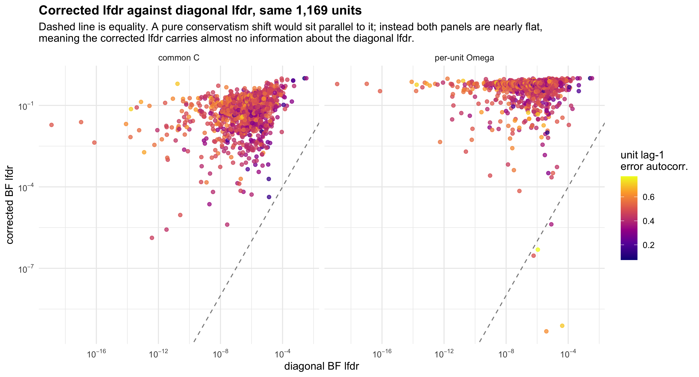
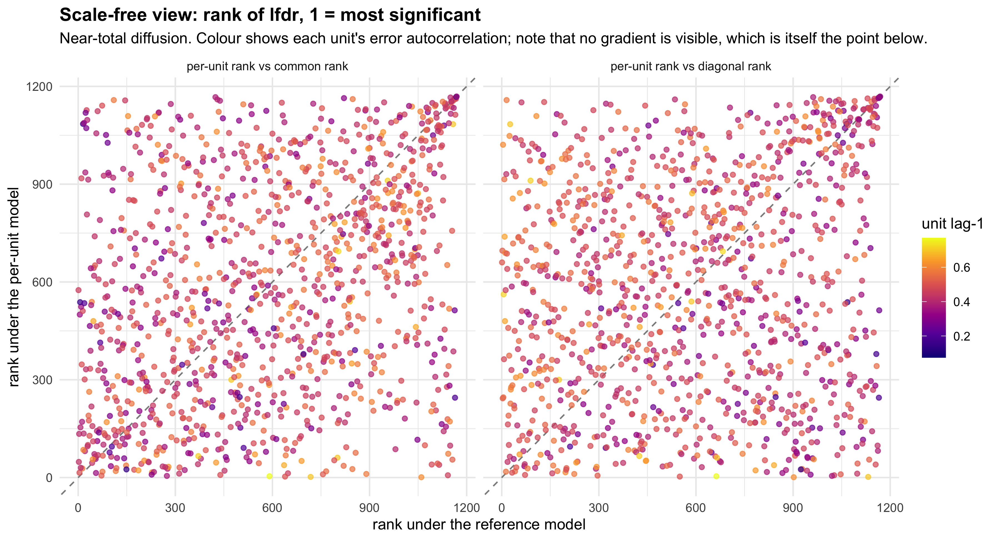
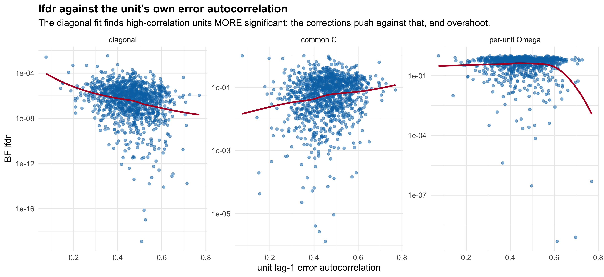

Last updated: 2026-08-25
Checks: 6 1
Knit directory: coderepo-local/
This reproducible R Markdown analysis was created with workflowr (version 1.7.2). The Checks tab describes the reproducibility checks that were applied when the results were created. The Past versions tab lists the development history.
The R Markdown is untracked by Git. To know which version of the R
Markdown file created these results, you’ll want to first commit it to
the Git repo. If you’re still working on the analysis, you can ignore
this warning. When you’re finished, you can run
wflow_publish to commit the R Markdown file and build the
HTML.
Great job! The global environment was empty. Objects defined in the global environment can affect the analysis in your R Markdown file in unknown ways. For reproduciblity it’s best to always run the code in an empty environment.
The command set.seed(20251109) was run prior to running
the code in the R Markdown file. Setting a seed ensures that any results
that rely on randomness, e.g. subsampling or permutations, are
reproducible.
Great job! Recording the operating system, R version, and package versions is critical for reproducibility.
Nice! There were no cached chunks for this analysis, so you can be confident that you successfully produced the results during this run.
Great job! Using relative paths to the files within your workflowr project makes it easier to run your code on other machines.
Great! You are using Git for version control. Tracking code development and connecting the code version to the results is critical for reproducibility.
The results in this page were generated with repository version 83ed337. See the Past versions tab to see a history of the changes made to the R Markdown and HTML files.
Note that you need to be careful to ensure that all relevant files for
the analysis have been committed to Git prior to generating the results
(you can use wflow_publish or
wflow_git_commit). workflowr only checks the R Markdown
file, but you know if there are other scripts or data files that it
depends on. Below is the status of the Git repository when the results
were generated:
Ignored files:
Ignored: .DS_Store
Ignored: .Rhistory
Ignored: .Rproj.user/
Ignored: Rplots.pdf
Ignored: analysis/.DS_Store
Ignored: analysis/.Rhistory
Ignored: code/.DS_Store
Ignored: code/.Rhistory
Ignored: code/revision_simulations/.DS_Store
Ignored: data/appendixB/
Ignored: data/dynamic_eQTL_real/
Ignored: data/revision_simulations/
Ignored: data/toy_example/
Ignored: output/dynamic_eQTL_real/
Ignored: output/pdf/
Ignored: output/playwright/
Ignored: output/revision_simulations/
Ignored: scripts/
Untracked files:
Untracked: analysis/revision_internal_fash_knockoff.rmd
Untracked: analysis/revision_internal_fash_temporal_class_enhancer_enrichment.rmd
Untracked: analysis/revision_internal_roadmap_enhancer_exploration.rmd
Untracked: analysis/revision_internal_three_likelihood_comparison.rmd
Untracked: code/revision_simulations/internal/fash_knockoff/reporting.R
Untracked: code/revision_simulations/internal/fash_knockoff/test_reporting.R
Untracked: code/revision_simulations/internal/fash_temporal_class_enhancer_enrichment/
Untracked: code/revision_simulations/internal/roadmap_enhancer_exploration/
Unstaged changes:
Modified: code/revision_simulations/internal/fash_knockoff/plot_lfdr_histograms.R
Modified: code/revision_simulations/internal/fash_knockoff/plot_w_boxplot_by_discovery.R
Note that any generated files, e.g. HTML, png, CSS, etc., are not included in this status report because it is ok for generated content to have uncommitted changes.
There are no past versions. Publish this analysis with
wflow_publish() to start tracking its development.
Built from the diagonal full-data BF fit:
Result: 1,169 units, 1,169 genes, 1,169 distinct variants, one variant per gene.
All three fits use the same units, the same \(\hat\beta\), the same t-adjusted standard
errors, and identical FASH settings (order = 1,
penalty = 10, num_basis = 20,
betaprec = 0, pred_step = 1, the 52-point PSD
grid). Only \(\Omega\) differs:
The panel is selected on the outcome, twice over: on having been discovered, and on being the most significant variant within its gene. So the diagonal row below, 1,169 of 1,169, is near-tautological — these units were chosen because the diagonal fit found them significant, so refitting the mixture on only them drives \(\pi_0\) to 0.003 and calls everything. It is not evidence that the diagonal likelihood is well behaved. The only interpretable contrast is per-unit against common.
read.csv(file.path(cache, "three_likelihood_summary.csv"), stringsAsFactors = FALSE) %>%
filter(stage == "bf") %>%
transmute(model, pi0, mean_lfdr, calls,
share_called = sprintf("%.1f%%", 100 * calls / nrow(u))) %>%
kable(digits = 5, caption = "BF-updated stage. Cumulative-lfdr alpha 0.05 on 1,169 units.")| model | pi0 | mean_lfdr | calls | share_called |
|---|---|---|---|---|
| per_unit | 0.64927 | 0.52170 | 118 | 10.1% |
| common | 0.23439 | 0.11075 | 793 | 67.8% |
| diagonal | 0.00257 | 0.00001 | 1169 | 100.0% |
The diagonal lfdr on this panel is uniformly tiny (median 7.5e-07, maximum 0.0034), so both axes are shown on \(\log_{10}\). Points are coloured by each unit’s own lag-1 error autocorrelation, the quantity shown previously to drive the reranking.
long <- bind_rows(
u %>% transmute(pair_key, diagonal = diagonal_bf_lfdr, corrected = common_bf_lfdr,
lag1 = per_unit_lag1, model = "common C"),
u %>% transmute(pair_key, diagonal = diagonal_bf_lfdr, corrected = per_unit_bf_lfdr,
lag1 = per_unit_lag1, model = "per-unit Omega")
)
ggplot(long, aes(diagonal, corrected, colour = lag1)) +
geom_abline(slope = 1, intercept = 0, colour = "grey55", linetype = "dashed") +
geom_point(size = 1.5, alpha = 0.75) +
scale_x_log10(labels = scales::label_log()) +
scale_y_log10(labels = scales::label_log()) +
scale_colour_viridis_c(name = "unit lag-1\nerror autocorr.", option = "C") +
facet_wrap(~model) +
labs(title = "Corrected lfdr against diagonal lfdr, same 1,169 units",
subtitle = "Dashed line is equality. A pure conservatism shift would sit parallel to it; instead both panels are nearly flat,\nmeaning the corrected lfdr carries almost no information about the diagonal lfdr.",
x = "diagonal BF lfdr", y = "corrected BF lfdr") +
theme_minimal(base_size = 11) +
theme(plot.title = element_text(face = "bold"), legend.position = "right")
cons <- function(a, b, la, lb) data.frame(
comparison = paste(la, "vs", lb),
spearman = cor(a, b, method = "spearman"),
pearson_log10 = cor(log10(a), log10(b)),
mean_abs_difference = mean(abs(a - b)))
bind_rows(
cons(u$per_unit_bf_lfdr, u$diagonal_bf_lfdr, "per-unit", "diagonal"),
cons(u$common_bf_lfdr, u$diagonal_bf_lfdr, "common", "diagonal"),
cons(u$per_unit_bf_lfdr, u$common_bf_lfdr, "per-unit", "common")
) %>% kable(digits = 3, caption = "Agreement of the BF-updated lfdr across models.")| comparison | spearman | pearson_log10 | mean_abs_difference |
|---|---|---|---|
| per-unit vs diagonal | 0.154 | 0.030 | 0.522 |
| common vs diagonal | 0.295 | 0.290 | 0.111 |
| per-unit vs common | 0.313 | 0.153 | 0.423 |
The corrected fits do not simply shift lfdr upward. Against the diagonal lfdr, the per-unit lfdr has Spearman 0.154 and a \(\log_{10}\) Pearson correlation of only 0.03 — that is essentially no relationship at all. The common-C fit is only slightly better at 0.295. Even the two corrected fits agree with each other only at 0.313.
Whatever these likelihoods are ranking on, it is largely orthogonal to what the diagonal likelihood ranks on, and to each other.
u <- u %>% mutate(across(ends_with("_bf_lfdr"), ~rank(.x), .names = "rank_{.col}"))
bind_rows(
u %>% transmute(x = rank_diagonal_bf_lfdr, y = rank_per_unit_bf_lfdr,
lag1 = per_unit_lag1, panel = "per-unit rank vs diagonal rank"),
u %>% transmute(x = rank_common_bf_lfdr, y = rank_per_unit_bf_lfdr,
lag1 = per_unit_lag1, panel = "per-unit rank vs common rank")
) %>%
ggplot(aes(x, y, colour = lag1)) +
geom_abline(slope = 1, intercept = 0, colour = "grey55", linetype = "dashed") +
geom_point(size = 1.4, alpha = 0.7) +
scale_colour_viridis_c(name = "unit lag-1", option = "C") +
facet_wrap(~panel) +
labs(title = "Scale-free view: rank of lfdr, 1 = most significant",
subtitle = "Near-total diffusion. Colour shows each unit's error autocorrelation; note that no gradient is visible, which is itself the point below.",
x = "rank under the reference model", y = "rank under the per-unit model") +
theme_minimal(base_size = 11) +
theme(plot.title = element_text(face = "bold"))
j <- function(a, b) length(intersect(a, b)) / length(union(a, b))
data.frame(
pair = c("per-unit & diagonal", "common & diagonal", "per-unit & common"),
n_a = c(length(sets$per_unit), length(sets$common), length(sets$per_unit)),
n_b = c(length(sets$diagonal), length(sets$diagonal), length(sets$common)),
intersection = c(length(intersect(sets$per_unit, sets$diagonal)),
length(intersect(sets$common, sets$diagonal)),
length(intersect(sets$per_unit, sets$common))),
jaccard = c(j(sets$per_unit, sets$diagonal), j(sets$common, sets$diagonal),
j(sets$per_unit, sets$common)),
a_nested_in_b = c(all(sets$per_unit %in% sets$diagonal),
all(sets$common %in% sets$diagonal),
all(sets$per_unit %in% sets$common))
) %>% kable(digits = 3, caption = "Call-set overlap at cumulative-lfdr 0.05.")| pair | n_a | n_b | intersection | jaccard | a_nested_in_b |
|---|---|---|---|---|---|
| per-unit & diagonal | 118 | 1169 | 118 | 0.101 | TRUE |
| common & diagonal | 793 | 1169 | 793 | 0.678 | TRUE |
| per-unit & common | 118 | 793 | 101 | 0.125 | FALSE |
common is nested in diagonal, and
per_unit is nested in diagonal, but
per_unit is not nested in
common: 17 of its 118 calls are not common calls.
The per-unit likelihood is reordering relative to the common one, not
just tightening it.
bind_rows(
u %>% transmute(lag1 = per_unit_lag1, lfdr = diagonal_bf_lfdr, model = "diagonal"),
u %>% transmute(lag1 = per_unit_lag1, lfdr = common_bf_lfdr, model = "common C"),
u %>% transmute(lag1 = per_unit_lag1, lfdr = per_unit_bf_lfdr, model = "per-unit Omega")
) %>% mutate(model = factor(model, c("diagonal", "common C", "per-unit Omega"))) %>%
ggplot(aes(lag1, lfdr)) +
geom_point(size = 1.2, alpha = 0.5, colour = "#0072B2") +
geom_smooth(method = "loess", se = FALSE, colour = "#B2182B", linewidth = 0.9) +
scale_y_log10() + facet_wrap(~model, scales = "free_y") +
labs(title = "lfdr against the unit's own error autocorrelation",
subtitle = "The diagonal fit finds high-correlation units MORE significant; the corrections push against that, and overshoot.",
x = "unit lag-1 error autocorrelation", y = "BF lfdr") +
theme_minimal(base_size = 11) + theme(plot.title = element_text(face = "bold"))
u$min_eig <- vapply(fits$per_unit_C, function(C)
min(eigen(C, symmetric = TRUE, only.values = TRUE)$values), numeric(1))
u$logdet <- vapply(fits$per_unit_C, function(C)
determinant(C, logarithm = TRUE)$modulus, numeric(1))
predictors <- c("per_unit_lag1", "cond", "min_eig", "logdet", "diagonal_full_lfdr")
do.call(rbind, lapply(predictors, function(v) data.frame(
predictor = v,
diagonal = cor(u$diagonal_bf_lfdr, u[[v]], method = "spearman"),
common_C = cor(u$common_bf_lfdr, u[[v]], method = "spearman"),
per_unit = cor(u$per_unit_bf_lfdr, u[[v]], method = "spearman")
))) %>% kable(digits = 3,
caption = "Spearman correlation of each model's lfdr with candidate explanators. For the error autocorrelation, negative means a more correlated unit looks more significant.")| predictor | diagonal | common_C | per_unit |
|---|---|---|---|
| per_unit_lag1 | -0.233 | 0.158 | 0.018 |
| cond | -0.186 | 0.187 | 0.032 |
| min_eig | 0.167 | -0.132 | -0.035 |
| logdet | 0.197 | -0.177 | -0.065 |
| diagonal_full_lfdr | 0.862 | 0.284 | 0.122 |
The diagonal fit is negatively associated with a unit’s error correlation (-0.233): the more correlated a unit’s errors, the more significant it looks. That is the expected direction if correlated errors inflate apparent smooth signal, and it is independent evidence that the diagonal likelihood is affected. It is also associated with the conditioning of that unit’s matrix.
The common-C fit flips every one of those signs, which is what a correction should do: it pushes back against exactly the units the diagonal fit was most liable to over-call.
The per-unit fit does neither. Its lfdr is essentially uncorrelated with all five candidates — error autocorrelation +0.018, condition number +0.032, minimum eigenvalue -0.035, log-determinant -0.065, and the full-data diagonal lfdr +0.122.
So the per-unit ordering is not explained by the strength of the unit’s error correlation, nor by how badly conditioned its matrix is, nor by how strong its signal looked originally. We cannot presently attribute it to anything, and an ordering with no identifiable driver is not one to trust. This is a stronger reason for caution than the conservatism itself.
data.frame(
quantity = c("common C condition number",
"per-unit condition number, median",
"per-unit condition number, 90th percentile",
"condition number expected from sampling noise alone",
"free residual dimensions per day (19 or 16 donors minus rank-6 covariates)"),
value = c(sprintf("%.1f", {e <- eigen(fits$common_C, symmetric = TRUE, only.values = TRUE)$values; max(e)/min(e)}),
sprintf("%.1f", median(u$cond)), sprintf("%.1f", quantile(u$cond, 0.9)),
"18.9 (90% range 16.1-22.2)", "10 to 13")
) %>% kable(caption = "The per-unit matrices are genuinely, reproducibly ill-conditioned.")| quantity | value |
|---|---|
| common C condition number | 16.3 |
| per-unit condition number, median | 93.6 |
| per-unit condition number, 90th percentile | 201.9 |
| condition number expected from sampling noise alone | 18.9 (90% range 16.1-22.2) |
| free residual dimensions per day (19 or 16 donors minus rank-6 covariates) | 10 to 13 |
The per-unit matrices are not noisy — split-half reproducibility of their minimum eigenvalue is 0.93 and of their lag-1 is 0.98. They are genuinely near-singular, because after projecting out the intercept and five PCs each day leaves only 10 to 13 free donor dimensions to support 16 time points. Inverting such a matrix puts enormous precision on directions the data barely constrain, and the common matrix escapes this only because averaging over hundreds of units acts as regularisation.
So the 118-call result should not yet be read as sharper inference. The diagnostic that would separate “genuine per-unit structure” from “near-singular directions” is a regularised per-unit fit, shrinking each \(C_j\) until its condition number matches the common matrix. That has not been run.
sessionInfo()R version 4.5.1 (2025-06-13)
Platform: aarch64-apple-darwin20
Running under: macOS Sequoia 15.6.1
Matrix products: default
BLAS: /System/Library/Frameworks/Accelerate.framework/Versions/A/Frameworks/vecLib.framework/Versions/A/libBLAS.dylib
LAPACK: /Library/Frameworks/R.framework/Versions/4.5-arm64/Resources/lib/libRlapack.dylib; LAPACK version 3.12.1
locale:
[1] en_CA/en_CA/en_CA/C/en_CA/en_CA
time zone: America/Chicago
tzcode source: internal
attached base packages:
[1] stats graphics grDevices utils datasets methods base
other attached packages:
[1] knitr_1.50 ggplot2_4.0.3 dplyr_1.1.4 workflowr_1.7.2
loaded via a namespace (and not attached):
[1] sass_0.4.10 generics_0.1.4 lattice_0.22-7 stringi_1.8.9
[5] digest_0.6.39 magrittr_2.0.5 evaluate_1.0.5 grid_4.5.1
[9] RColorBrewer_1.1-3 fastmap_1.2.0 Matrix_1.7-4 rprojroot_2.1.1
[13] jsonlite_2.0.0 processx_3.8.6 whisker_0.4.1 ps_1.9.1
[17] promises_1.5.0 httr_1.4.7 mgcv_1.9-4 viridisLite_0.4.3
[21] scales_1.4.0 jquerylib_0.1.4 cli_3.6.6 rlang_1.2.0
[25] splines_4.5.1 withr_3.0.3 cachem_1.1.0 yaml_2.3.12
[29] otel_0.2.0 tools_4.5.1 httpuv_1.6.16 vctrs_0.7.3
[33] R6_2.6.1 lifecycle_1.0.5 git2r_0.36.2 stringr_1.6.0
[37] fs_1.6.6 pkgconfig_2.0.3 callr_3.7.6 pillar_1.11.1
[41] bslib_0.9.0 later_1.4.4 gtable_0.3.6 glue_1.8.1
[45] Rcpp_1.1.1-1.1 xfun_0.55 tibble_3.3.0 tidyselect_1.2.1
[49] rstudioapi_0.17.1 dichromat_2.0-0.1 farver_2.1.2 nlme_3.1-168
[53] htmltools_0.5.9 rmarkdown_2.30 labeling_0.4.3 compiler_4.5.1
[57] getPass_0.2-4 S7_0.2.2
sessionInfo()R version 4.5.1 (2025-06-13)
Platform: aarch64-apple-darwin20
Running under: macOS Sequoia 15.6.1
Matrix products: default
BLAS: /System/Library/Frameworks/Accelerate.framework/Versions/A/Frameworks/vecLib.framework/Versions/A/libBLAS.dylib
LAPACK: /Library/Frameworks/R.framework/Versions/4.5-arm64/Resources/lib/libRlapack.dylib; LAPACK version 3.12.1
locale:
[1] en_CA/en_CA/en_CA/C/en_CA/en_CA
time zone: America/Chicago
tzcode source: internal
attached base packages:
[1] stats graphics grDevices utils datasets methods base
other attached packages:
[1] knitr_1.50 ggplot2_4.0.3 dplyr_1.1.4 workflowr_1.7.2
loaded via a namespace (and not attached):
[1] sass_0.4.10 generics_0.1.4 lattice_0.22-7 stringi_1.8.9
[5] digest_0.6.39 magrittr_2.0.5 evaluate_1.0.5 grid_4.5.1
[9] RColorBrewer_1.1-3 fastmap_1.2.0 Matrix_1.7-4 rprojroot_2.1.1
[13] jsonlite_2.0.0 processx_3.8.6 whisker_0.4.1 ps_1.9.1
[17] promises_1.5.0 httr_1.4.7 mgcv_1.9-4 viridisLite_0.4.3
[21] scales_1.4.0 jquerylib_0.1.4 cli_3.6.6 rlang_1.2.0
[25] splines_4.5.1 withr_3.0.3 cachem_1.1.0 yaml_2.3.12
[29] otel_0.2.0 tools_4.5.1 httpuv_1.6.16 vctrs_0.7.3
[33] R6_2.6.1 lifecycle_1.0.5 git2r_0.36.2 stringr_1.6.0
[37] fs_1.6.6 pkgconfig_2.0.3 callr_3.7.6 pillar_1.11.1
[41] bslib_0.9.0 later_1.4.4 gtable_0.3.6 glue_1.8.1
[45] Rcpp_1.1.1-1.1 xfun_0.55 tibble_3.3.0 tidyselect_1.2.1
[49] rstudioapi_0.17.1 dichromat_2.0-0.1 farver_2.1.2 nlme_3.1-168
[53] htmltools_0.5.9 rmarkdown_2.30 labeling_0.4.3 compiler_4.5.1
[57] getPass_0.2-4 S7_0.2.2